| 横浜国立大学工学部第四寮 |
第８回弘南寮ゴルフ大会
時 ： 平成２２年６月２１日（月）
所 ： 袖ヶ浦カントリー倶楽部、袖ヶ浦コース
千葉市緑区辺田町５６７
幹事 ： 野村安広、秋山正樹
| ついこの前始まったばかりの感じだが、早いもので今回は第８回、稲田さんのホームコースである名門袖ヶ浦に、総員１５名の参加を得て賑やかに開催された。 梅雨時のコンペは全く幹事泣かせ、幹事役の野村さんと秋山さんは、天気の行方にヤキモキされたと思われるが、途中チョット傘をさす場面があったものの、総じて照らず降らず、絶好のゴルフ日和でした。 |
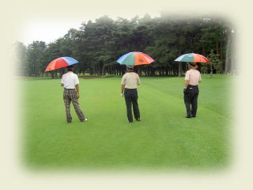 |
| 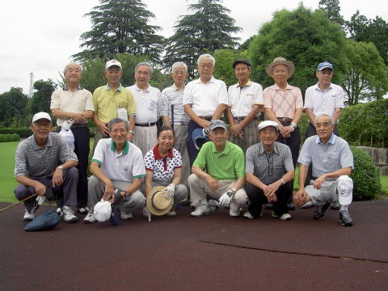 | 前列 左から ３８年造船 久米範佳 ４０年建築 外池久雄 稲田ひとみ ３６年電工 高石周志 ３７年応化 高橋千穐 ３７年建築 野村安広 後列 左から ３７年造船 猪原暉雄 ３８年建築 秋山正樹 ３５年建築 村上處直 ３４年機械 山之内克彦 ３４年電化 嵐雅彦 ３５年造船 伊勢本幸雄 ３８年電工 稲田浩一 ４７年機械 安岡慶和 |
| 注１： この他、写真には洩れているが３１年造船 竹内哲夫さんが参加されている |
| 注２： 初参加の安岡さんは途中で針路変更し医者の道に進まれ、未だ現役のお医さんです。 |
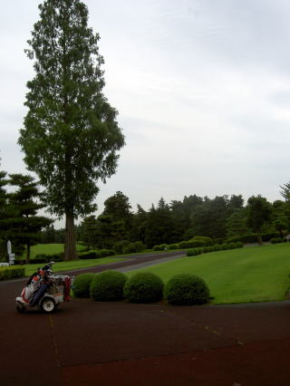
泥縄式無駄な努力をする者あり、 颯爽と掃き溜めに降り立つ鶴あり、はたまた取らぬ
狸を勘定している？者あり、ゴルフはスタート前のこの気分が最高ですね。
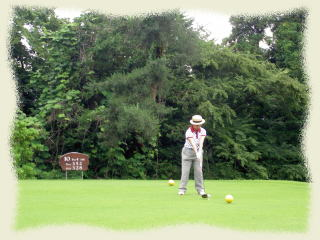
| 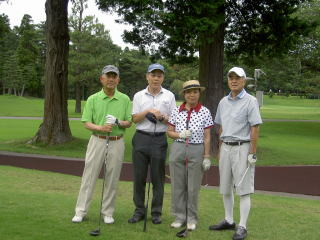 | 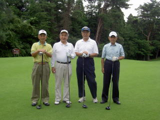 |
| 第１組 高石、安岡、稲田、野村 | 第２組 秋山、村上、嵐、 竹内 |
| 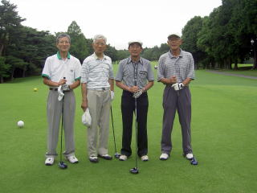 | 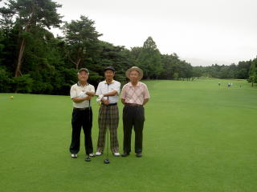 |
| 第３組 外池、山之内、高橋、久米 | 第４組 猪原、伊勢本、稲田 |
昼食風景
| 秋山幹事の挨拶 | 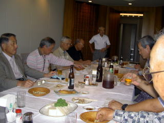 |
成績発表
| Ｏｕｔ | Ｉｎ | Ｇｒｏｓｓ | ＨＤＣＰ | Ｎｅｔ | ||
| 優勝 | 稲田浩一 | 43 | 49 | 92 | 14 | 78 |
| ２位 | 山之内克彦 | 54 | 50 | 104 | 24 | 80 |
| ３位 | 高橋千穐 | 63 | 54 | 117 | 36 | 81 |
| 4位 | 安岡慶和 | 56 | 59 | 115 | 33 | 82 |
| 5位 | 伊勢本幸雄 | 51 | 48 | 99 | 16 | 83 |
| Ｂｅｓt | Ｇｒｏｓｓ | |||||
| 野村安広 | 42 | 48 | 91 |
| 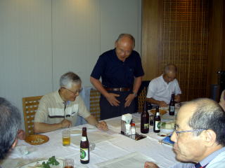 | ||
| 優勝者の挨拶 | 準優勝、嬉しそうですね。 | 3位入賞、おめでとうございます。 |
| 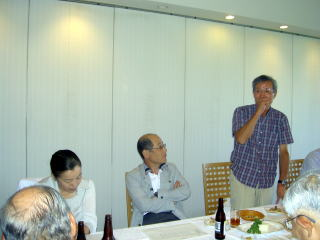 | ||
| 竹内さんの挨拶 | 外池次回幹事の挨拶 |
|
| 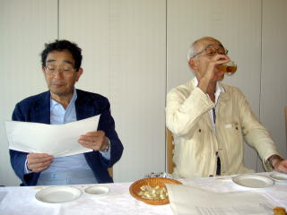 | 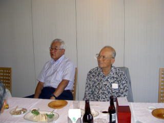 | 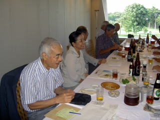 |
次回は 10月18日（月） 稲田さんと外池さんが幹事です。
また元気でお会いしましょう。
以上文責 いのはら